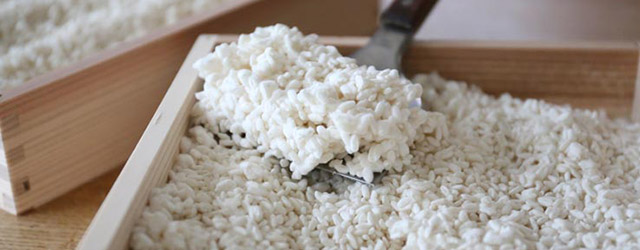
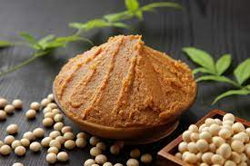
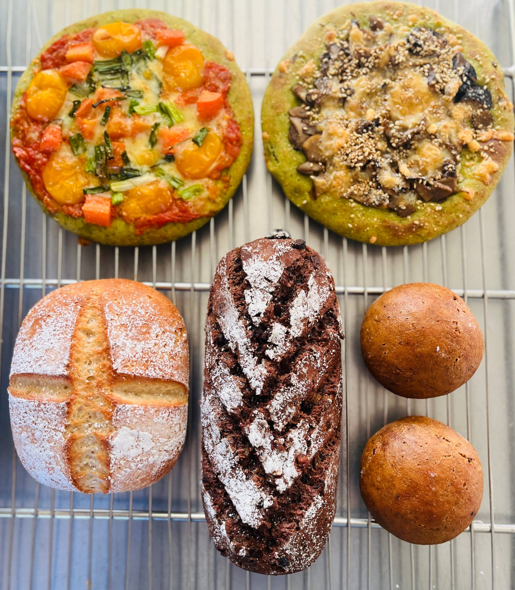
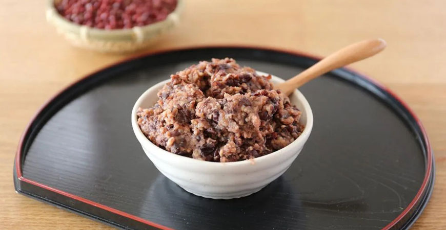
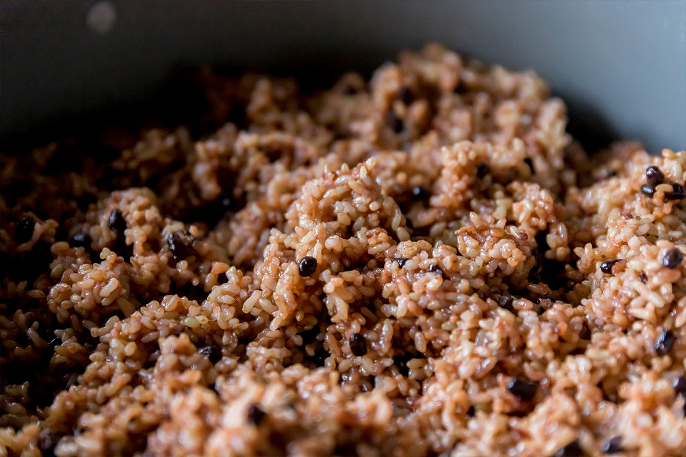
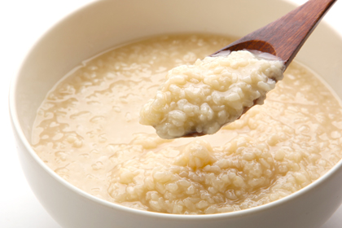
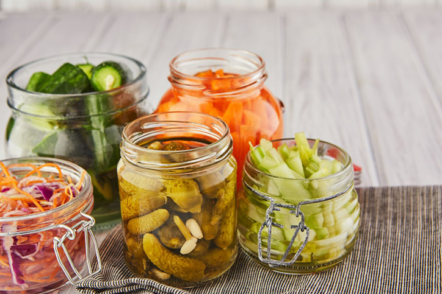
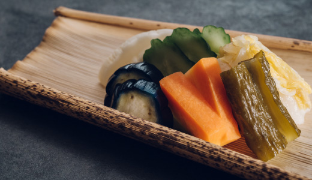
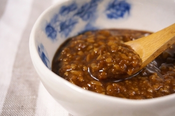
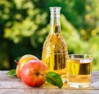

Fermentation
醗酵実践塾
自然農、自然の恵み、天然食（野草・薬草・山菜・キノコ・木の実）の醗酵・加工法を学び、 自然のエネルギーの高さ、すばらしさを生活に落とし込むための学びの場です。
糀作り・味噌・縄文漬け・甘酒・シードルなど、全11講座を2泊3日で集中して学ぶ醗酵の集中リトリートです。 伝承者を養成することを目的としています。
天給自足実践塾の年間カリキュラムでは、10月の回（醗酵実践塾＆きのこを楽しむ会）としても 組み込まれていますが、醗酵実践塾は単独でもご参加いただけます。
醗酵は、菌に委ね、待ち、信じる暮らしです。八ヶ岳の澄んだ空氣と大自然の中で、 日本の醗酵文化と伝統食を心身に落とし込みませんか。
委ねる。
待つ。
信じる。
醗酵生活を理解し、伝承する──ひとり一人がパワースポットとなり、 日本の叡智を広げてゆきましょう。
★醗酵実践塾で学ぶこと
糀作り・味噌・縄文漬け・甘酒・シードル作りをはじめ、全11講座で醗酵を体系的に学びます。 自然農の作物・野草・醗酵食をいただくことは「生命力」を食べること。 老けない、病まない、飢えない生き方を、醗酵の実践から提案します。

会場：café & stay レジオン八ヶ岳（長野県諏訪郡原村）。宿泊・食事込みの合宿型リトリートです。
Gallery
醗酵実践塾でつくるもの
糀から味噌、米粉と玄米粉のパン、醗酵あんこまで。醗酵の力で生まれる、からだに優しい手づくりの品々です。









